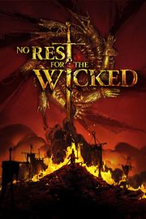

No Rest for the Wicked
Detalles
|  | |
| Tiempo de juego | No Jugado |
| Última actividad | Nunca |
| Añadido | 11/6/2024 14:41:31 |
| Modificado | 11/8/2024 17:36:55 |
| Estado de finalización | No Jugado |
| Librería | Playnite |
| Fuente | 6TB STORE |
| Plataforma | PC (Windows) |
| Fecha de lanzamiento | 4/18/2024 |
| Puntuación de la Comunidad | 76 |
| Puntuación de la Crítica | |
| Puntuación de usuario | |
| Género | Acceso anticipado Acción Aventura Rol |
| Desarrollador | Moon Studios GmbH |
| Editor | Private Division |
| Característica | Cloud Saves Compat. Parcial Con Mando Préstamo Familiar Un Jugador |
| Enlaces | Punto de encuentro Discusiones Guías Noticias Página de la tienda PCGamingWiki |
| Tag | 3D Acción Ambientales Cinematográficos Coloridos Combate Drama Estilizados Exploración Fantasía oscura Góticos Hack and slash Isométricos Para mando Personalización de personajes Rol Rol de acción Simulador inmersivo Sobrenaturales Tipo «Dark Souls» |
Descripción

Moon Studios, los desarrolladores galardonados por su trabajo en Ori and the Blind Forest y Ori and the Will of the Wisps, nos traen No Rest for the Wicked, un RPG visceral repleto de Acción certera que revolucionará el género.
Año 841, el rey Harol ha muerto. La noticia de su fallecimiento se propaga por todo el reino y la corona pasa a Magnus, su arrogante hijo, que no ha pisado nunca el campo de batalla.
Para empeorar las cosas, la pestilencia, una plaga maldita que llevaba mil años erradicada, ha regresado y lo corrompe todo y a todos los que toca, asolando la tierra por la que pasa. La madrigal Seline, una figura ambiciosa e implacable de la iglesia, cree que la pestilencia le brindará la ocasión de demostrar su valía ante los ojos de su dios.
Todas estas fuerzas convergen en Sacra, donde los grupos rebeldes y el gobierno local luchan por hacerse con el control de las ruinas decadentes de la isla.
Tú formas parte de los cerim, un grupo de guerreros místicos sagrados con poderes increíbles que han jurado acabar con la pestilencia cueste lo que cueste. No obstante, tu misión se volverá cada vez más complicada al involucrarte en los aprietos de la gente y los enormes problemas políticos de esta tierra oprimida. El caos te arrastrará en todas direcciones mientras intentas eliminar la maldad de la tierra y dar forma al destino del reino.
Características principales:


Perfecciona tus habilidades de batalla con un sistema que desafía tu capacidad para la estrategia y planificación. Enfréntate a monstruos horribles, soldados enemigos y jefes complicados en combates tensos y viscerales. Siente el peso y la velocidad de cada arma a través de sus propios tipos de movimientos. Hechiza tu armamento con runas, fabrica armaduras inusuales y crea a medida el perfil de tu personaje para que se adapte a tu estilo.

Descubre la oscura y cruda historia que se esconde en las áridas orillas de la isla de Sacra. Los gobernantes más avispados y un grupo de rebeldes de lo más violentos se disputan el trono mientras una antigua plaga asola la tierra y convierte a sus habitantes en versiones monstruosas de ellos mismos.

Explora un cuadro con vida propia. Disfruta del mundo pictórico y diseñado hasta el mínimo detalle con un estilo artístico único y atemporal. Cada fotograma exuda belleza, desde los destellos de luz de los sotoprados hasta las sombras retorcidas salpicadas de vísceras del paso Innombrable. En cada sitio vive gente distinta con sus propios problemas, tesoros ocultos y secretos que desvelar.

Descansa en la ciudad de Sacramenta, donde podrás comprarte una casa y decorarla a tu gusto. Pasa el rato pescando en las orillas, labra la tierra y recoge los ingredientes que coseches para cocinar platos que restablezcan tu salud y mejoren tus atributos. Entabla amistad con los diversos mercaderes y vecinos de Sacramenta y colabora para que recupere su gloria.

Comparte tu mundo y tu progreso con hasta tres amigos aliados en el modo cooperativo en línea de la campaña. Podréis compartir las misiones, los jefes y vuestra exploración de Sacra... o hacerlo todo por separado y a vuestro ritmo.